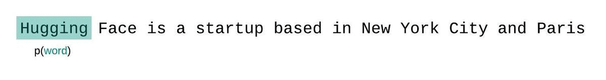
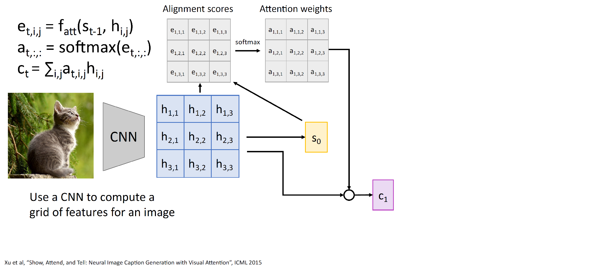
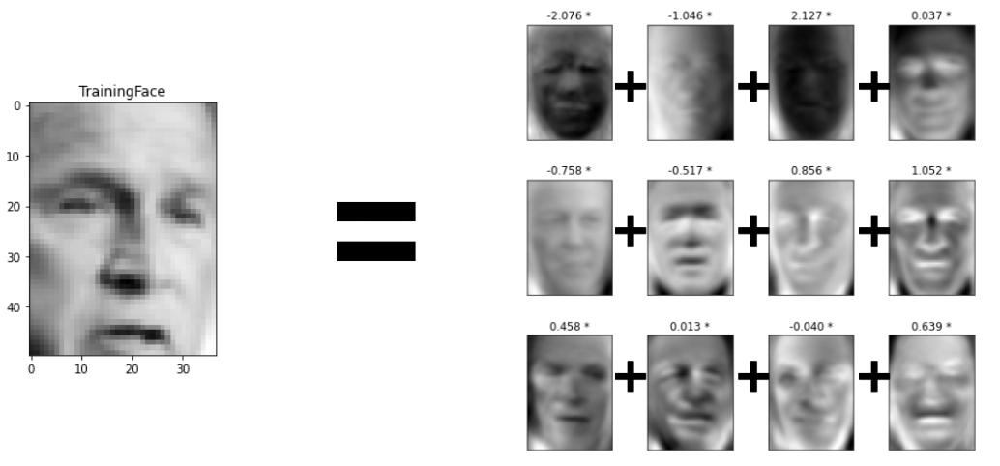
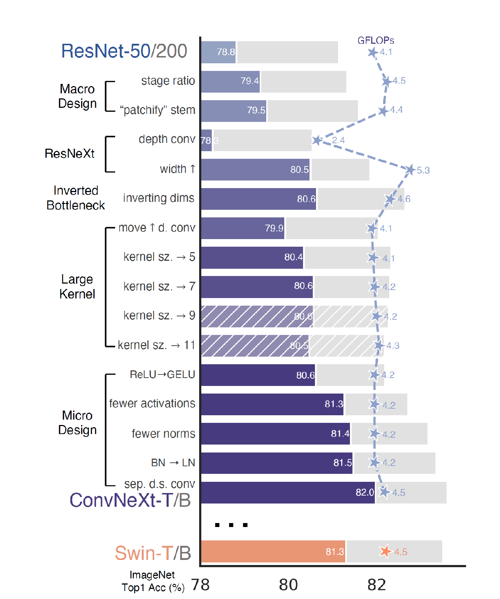

Sequence modeling
- Image: a grid of pixels; no natural order
- Text: a sequence of symbols; order reflects the writing order but not necessarily the reading time; reading is not sequential! (essentially, time)
- Speech: acoustic signal recorded over time; continuous but digitized into finite time steps
- Many other such signals in medicine, biology, physics
- Video frames: ordered by (recording) time
- Sometimes output is a sequence even if input is not, e.g., generating text describing an image
- It should be beneficial to capture special properties of such data
Language modeling: Markov model
- Key property of sequences: the probability distribution over the next item depends on the history
- Markov models: assume that the recent history is all we care about \[\pc{\vx_i}{\vx_1,\ldots,\vx_{i-1}}\;=\;\pc{\vx_i}{\vx_{i-k},\ldots,\vx_{i-1}}. \]
- Example: the $n$-gram model for English, in C. Shannon's "A Mathematical Theory of Communication", 1948.
- Zeroth order: no temoral dependency, just character frequencies.
XFOML RXKHRJFFJUJ ZLPWCFWKCYJ FFJEYVKCQSGXYD QPAAMKBZAACIBZLHJQD - 1st order (note: space is a character, and we can sample by drawing $x_i$ from the conditional)
OCRO HLI RGWR NMIELWIS EU LL NBBESEBYA TH EEI ALHENHTTPA OO BTTV - 2nd order
ON IE ANTSOUTINYS ARE T INCTORE ST BE S DEAMY ACHIN D ILONASIVE TUCOOWE FUSO TIZIN ANDY TOBE SEACE CTISBE - 4th order
THE GENERATED JOB PROVIDUAL BETTER TRAND THE DISPLAYED CODE ABOVERY UPONDULTS WELL THE CODERST IN THESTICAL IT TO HOCK BOTHE
Modeling language with $n$-grams
- $k$-th order Markov model over characters (or over words): effectively build a look-up table for $k$-long sequences.
- Given $x_1,\ldots,x_{k-1}$, consider all possible completions to $k$ -- i.e., all possible characters for next position
- We can estimate probability of any sequence by using (probability) chain rule
- To generate: pick most frequent (greedy sampling) -- or sample from the conditional Recall Bayes rule \[\pc{A}{B}\,=\,\frac{p(A,B)}{p(B)}\]
- Consider the sentence $\vw = \BOS\text{"The quick brown fox jumped over the lazy dog"}\EOS$
\[\begin{align} p(w_1, \ldots, w_n) & = & p(\text{the}| \BOS)\\
& & p(\text{quick}|\text{the}, \BOS)\\
& & p(\text{brown}|\text{quick, the})\\
& & \ldots\\
& & p(\text{dog}|\text{lazy, the})\\
& & p(\EOS| \text{dog, lazy})
\end{align} \]
\[\hat{p}(\text{quick}|\BOS, \text{the}) =
\frac{\text{count}(\BOS,\text{the, quick})}{\text{count}(\BOS,
\text{the})}
\]
- The probabilities come from counting -- so in practice we are limited to 7- or 8-grams
Sequence modeling: HMM
- The traditional Markov model looks directly at dependencies between observed values over time (counting co-occurences)
- We can make it fancier by using, say, an MLP to predict the next character, but still have no memory
- A Hidden Markov Model (HMM) presumes there is a hidden (latent, i.e., unobserved) state that drives the observations. In an HMM it's a discrete state variable
- Need two probability distributions to model:
The state transition probabilities $\pc{s_t}{s_{t-1}}$,
The observation emission probabilities $\pc{x_t}{s_t}$ - With $k$ states and vocabularly of size $D$, we need We also need the probability for initial state $s_0$: a vector in $\mathbb{S}^k$ a $k$x$k$ matrix and a $D$x$k$ matrix
- Introduced in mid-1960s, became popular in 1970s for speech recognition, where it was the reigning modeling approach until 2010s
- This is a latent variable model: \[\begin{align} p(\vx_1,\ldots,\vx_T)\,&=\,\max_{(s_1,\ldots,s_T)}p(\vx_1,\ldots,\vx_T,s_0,s_1,\ldots,s_T)\\ & \class{rj-hide-0-5}{=\, \class{rj-alert-10-}{\class{rj-enlarge-persist rj-popover-latpop}{\max_{(s_0,s_1,\ldots,s_T)}}}p(s_0) } \class{rj-hide-0-6}{\pc{s_1}{s_0}} \class{rj-hide-0-7}{\pc{\vx_1}{s_1}} \class{rj-hide-0-8}{\pc{s_2}{s_1}\pc{\vx_2}{s_2}\ldots} \end{align}\] The problem: there are exponentially many paths through $s_1,\ldots,s_T$ that can explain a particular sequence of $\vx$. We need a clever way to compute this; also to find \[\argmax{s_0,s_1,\ldots,s_T}\pc{s_0,\ldots,s_T}{\vx_1,\ldots,\vx_T}\] (state decoding). Many exist, e.g., the Viterbi algorithm.
HMM enhancements
- Input-output HMMs: we observe two streams of variables: $(\vx_t,\vy_t)$
- We now model:
State transitions $\pc{s_t}{s_{t-1}}$,
Input to state model $\pc{s_t}{s_{t-1},\vx_t}$
Observation emission $\pc{\vy_t}{s_t}$ - Note: the machinery of HMMs requires the state to be discrete, but the observations (or here inputs and outputs) don't have to be; e.g., $\pc{s_t}{\vx_t,s_t}$ is a classifier, but $\pc{\vx_t}{s_t}$ can be a density estimator/regressor
- Many enhancements over the decades; but ultimately limited by the discrete nature of the state
HMM training and inference
- HMMs must be trained from sequences of observed values, $(\vx_1,\ldots)$ or $(\vx_1,\vy_i)$
- In principle could use gradient descent but in practice the best way to train turned out to be the Expectation Maximization algorithm (EM) developed originally for this purpose
- Became the dominant algorithm for training all kinds of latent variable models in 1970--2010s
- The EM algorithm for (approximately) maximizing likelihood of a model (with parameters $\btheta$) on observed $\vx$ with latent $\vh\in\mathcal{H}$
\[\max_\btheta \sum_{\vh\in\mathcal{H}}p(\vx,\vh;\btheta)\]
- iteration $i=0$: start by guessing the $\btheta^{(0)}$
- Compute the posterior distribution over the latents (under the current parameter estimates) \[\tilde{p}^{(i)}\,=\,\pc{\vh}{\vx;\btheta^{(i)}}\]
- Update model to maximize the expected likelihood \[\btheta^{(i+1)}\,=\,\argmax{\btheta} \Ep{\vh\sim\tilde{p}^{(i)}(\cdot)}{\log p(\vx,\vh;\btheta)} \]
- Repeat until convergence
Language modeling: word2vec
- An old idea in linguistics/NLP: context can tell us about the meaning
You shall know a word by the company it keeps
- Goal: map words to vectors, e.g., to use in neural network based models
- If we want to map words to vectors, we may want to rely on this to convey to us which words have similar meaning
- word2vec (Mikolov et al., 2012): learn the word embeddingsinto $\mathbb{R}^d$ by training to predict words from surrounding $n$-grams
word2vec: method and properties
- We have a vocabulary of size $V$; want to embed each word into $\mathbb{R}^N$
- Very simple architecture: two-layer network. Each word is a 1-hot vector $\vx$.
First layer: embedding $\mathbf{e}\,=\,\mathbf{W}_I\cdot\vx$, $\mathbf{W}_I\in\mathbb{R}^{N\times V}$
Second layer: predict output, $\vz\,=\,\mathbf{W}_O\cdot\mathbf{e}$, $\mathbf{W}_O\in\mathbb{R}^{N\times V}$
Finally, compute (average) cross-entropy loss between the softmax over $\vz$ and (each of) the context words; backpropagate. - Hyperparameters: $N$ and the context size
- Once trained: we can discard $\mathbf{W}_O$, and use the embedding $\mathbf{W}_I$ to map words to vectors, for various tasks (more on that shortly).
- This is an example of unsupervised representation learning
Word2vec embedding projector
Word2vec embedding arithmetic
- The vector space of word2vec embeddings captures many interesting properties of the meaning of the words
- We can analyze it by considering vector arithmetic, e.g., $e_{king}-e_{man}+e_{woman}\approx e_{queen}$
Tokens in language modeling
- What are the units that we should be embedding?
- Option 1: "words" as tokens
- What about unknown words? Can use <UNK> but often can infer the meaning, e.g., PhDing
- Misses relationships between morphological variants, e.g., building and buildings
- Option 2: characters as tokens
- Misses the opportunity to directly represent common patterns; need very long context to make sense of a symbol
- Option 3: learn a tokenizer driven by information-theoretic ideas. Most common today: Byte-Pair Encoding, BPE
- Main idea: start with single bytes (from UTF-8 encoding);
find the two most co-occuring symbols, merge into new symbol;
continue until reach the token budget (e.g., GPT-4 BPE tokenizer has 100,256 tokens)
- Some OpenAI's GPT-4o tokenizer tokens are words, some are sub-words (including single bytes), some (very rare) may be multiple words.
- So now we have a token vocabulary; can embed it (e.g., with word2vec), and do an HMM -- but can we do better?
Sequence modeling: formulation
- Static data: input to hidden, hidden to output
- One to many: image captioning
- Many to one: video classification
- Many to many (aligned): labeling video frames
- Many to many, encoder/decoder setup: machine translation
- We can not have separate parameters for each frame
(why not?)
- Too expensive
- Want to deal with varying # of frames
- We will instead define a recurrence formula
\[\begin{align}
\class{rj-hide-0-4}{\mathbf{h}_t\,}&
\class{rj-hide-0-4}{=\,F\left(\mathbf{x}_t,\mathbf{h}_{t-1}\right)}\\
\class{rj-hide-0-5}{\widehat{\mathbf{y}}\,}&
\class{rj-hide-0-5}{=\,F_{out}\left(\mathbf{h}_t\right)}
\end{align}
\]
- $F$, $F_{out}$ are neural (sub)networks!
RNN: training
- Simple (single hidden layer) RNN; $g$ is the activation function \[\begin{align} \mathbf{h}_t\,&=\,g\left(\mathbf{W}_{xh}\vx_t+\textcolor{red}{\mathbf{W}_{hh}}\mathbf{h}_{t-1}+\mathbf{b}_h\right)\\ \class{rj-hide-0-3}{ \widehat{\mathbf{y}}_t\, }& \class{rj-hide-0-3}{ =\,\mathbf{W}_{y}\vh_t+\mathbf{b}_y } \end{align} \]
RNN training
- Same general idea, but the notion of output (and the loss) depends on the task
- Some nuts and bolts:
- When we predict multiple $y$s, we end up computing the average loss (need a scalar!)
- $\vh_0$ is an additional set of parameters to learn
- Usually will have special $\BOS$, $\EOS$ tokens (beginning/end of sequence)
RNN training
- Consider vocabulary of ['h','e','l','o', and the corpus consisting of 'hello'.
- Recall $\mathbf{h}_t\,=\,\tanh\left(\mathbf{W}_{xh}\vx_t+\textcolor{red}{\mathbf{W}_{hh}}\mathbf{h}_{t-1}+\mathbf{b}_h\right)$
- Given 'h', predict 'e' (i.e., estimate $\pc{\texttt{'e'}}{\BOS,\vh_0}$, and compute cross entropy loss)
- Given 'e' (and the state after seeing 'h') predict 'l';
- Continue, each time feeding the RNN This is known as "teacher forcing". the ground truth sample for the previous position (regardless of what it predicted)
- Finally, given 'o' predict $\EOS$

- There is a discrepancy in how the model is trained and how it is used to sample
- An attempt to mitigate it: scheduled sampling. A curriculum learning approach: flip a coin for each token, if heads, use GT sample, otherwise use the prediction from the model
- The probability of GT sample starts at 1 and goes to 0 over the training
RNN generation
- To sample from the model: run autoregressive generation
- Using $\vh_0$ and $\vx_0\,=\,E(\BOS)$, get $\vh_1$, then the logits for $\vx_1$
- Sample from logits $f_1,\ldots,f_V$ ($V$ is vocabulary size)
- Greedy sampling: pick $\argmax{i} f_i$
- Probabilistic sampling: draw from softmax distribution, for word $i$ in the vocabulary \[p(x_t=i)\,=\, \class{rj-enlarge-persist rj-popover-temppop}{ \frac{\exp\left(f_i/\tau\right)} {\sum_{j\in[V]}\exp\left(f_j/\tau\right)}} \] using a temperature $\tau$ to control diversity/confidence
- Feed it back to the model as if it were ground truth; compute $\vh$; sample $\vx_2|\vx_1,\vh_2$,…
- Stop generating when the $\vx_t=\BOS$
Backpropagation through time
- Once we "unroll" the RNN, we can just treat it as any other network, and run backprop
- Need an extra trick: tie the weights of $\mathbf{W}_{hh}$
- This can get very expensive -- need to feed the whole sentence into memory (along with many copies of the weights gradient, at least)
- Truncated backprop through time is a solution (at a cost)
Perplexity and other losses
- Consider a discrete distribution $p(X)$; its entropy is $H(p)\,=\,-\sum_xp(X=x)\log_2 p(X=x)$
- The perplexity of the distribution is \[PP(p)\,=\,2^{-H(p)}\] Intuition: effective (expected) number of reasonably possible values
- Perplexity of [the conditional token probability induced by a] language model $p$: measured on a sequence $W=(w_1,\ldots,w_T)$, averaged over the sequence
\[ PP(p,W)\,=\,2^{-\frac{1}{T} \sum_{i=1}^T\log_2 \pc{w_i}{w_0,\ldots,w_{i-1}}}\]
- At training time, the usual loss is just (token level) cross entropy, \[L(p;W)\,=\,\sum_i -\log\pc{w_i}{w_0,\ldots,w_{i-1}}\]
- When used for a well defined task like translation, there are task-specific metrics, like Bilingual Evaluation Understudy: BLEU-$n$ considers precisions $\{p_k\}$ of $k$-gram matches, for $k=1,\ldots,n$, \[\mathrm{BLEU}_n\,=\,BP\cdot\exp\left(\sum_{k=1}^n\log p_k\right)\] where $BP$ is "brevity penalty" (smaller than one if the prediction is shorter than reference). Example: yields $\mathrm{BLEU}_4\,\approx\,0.33$ BLEU or CiDER -- but these are not differentiable, so can not be used in training!
Sequence modeling: LSTM
- The flow of gradient through the RNN:
- Lots of multiplication by $\mathbf{W}$ and repeated application of the derivative of activation
- Depending on the conditioning of $\mathbf{W}$ (largest singular value), will get We have seen earlier a successful attempt to deal with it: ResNet! vanishing or The main trick to combat this: gradient clipping exploding gradients
- Long Short Term Memory (LSTM): in addition to hidden state $\vh_t$, maintain "cell state" vector $\vc_t$
LSTM gates
- The input gate: writing to the cell
- The forget gate: erasing the cell
- The output gate: reading off the cell
- The gain gate: how much to write
- The gradient flow is drastically improved!
LSTM can handle 100s and (generally) 1000s of steps
Deep LSTM networks
- We can stack multiple LSTM layers!
\[\def\lind#1{{\color{red} #1}}
\begin{align}
\begin{bmatrix}
\mathbf{i}_t^\lind{l}\\
\mathbf{f}_t^\lind{l}\\
\mathbf{o}_t^\lind{l}\\
\mathbf{g}_t^\lind{l}\\
\end{bmatrix}\,&=\,
\begin{pmatrix}
\sigma\\
\sigma\\
\sigma\\
\tanh
\end{pmatrix}\left(\mathbf{W}\vh_{t-1}^{\color{red} l}\\
\vh_t^{\color{red}l-1}\,+\,\mathbf{b}_h^\lind{l}
\right)\\
\mathbf{c}_t^\lind{l}\,&=\,
\mathbf{f}_t^\lind{l}\,\odot\,\mathbf{c}_{t-1}^\lind{l}\,+\,
\mathbf{i}_t^\lind{l}\,\odot\,\mathbf{g}_t^\lind{l}\\
\mathbf{h}_t^\lind{l}\,&=\,\mathbf{o}_t^\lind{l}\,\odot\,
\tanh\left(\mathbf{c}_t^\lind{l}\right)\\
\widehat{\mathbf{y}}_t\,&=\,F\left(\mathbf{h}_t^\lind{1},\ldots,\mathbf{h}_t^\lind{L}\right)
\end{align}
\]
- $t$: time index, $\lind{l}$: layer index
- Can add skip connections (between layers for the same $t$) too, of course
Language generation with LSTMs
- Recall Shannon's $n$-grams:
THE GENERATED JOB PROVIDUAL BETTER TRAND THE DISPLAYED CODE ABOVERY UPONDULTS WELL THE CODERST IN THESTICAL IT TO HOCK BOTHE - A. Karpathy, 2015: trained a 3-layer LSTM ($d_{hidden}=512$) on a corpus of Shakespeare's collected works; this took a few hours.
Conditional language generation
- One of the first major applications of LSTMs: "image captioning" This is an "one to many" RNN task; needs to fuse vision and language models/representations
- An additional input to $\vh_t$: image embedding (using a "frozen" convnet).
- The conditioning is static, playing the same role for every output word


Language modeling: ELMO
- ELMo (Embeddings for Language Modeling) had a big impact with two ideas:
- Bi-drectional LSTM. This is really two LSTMs, run in parallel (one start to end, one backwards)
- Trained as usual, with cross-entropy for next (or, for backward model, previous) word prediction

- Contextual embeddings: the vector representing the work stick will depend on the sentence in which it appears!
- ELMo starts with word2vec embeddings, but them transforms them given the context

ELMO as a "foundation model"
- Once the bi-LSTM is trained, a word (in a sentence) is represented by a linear combination of all the layers in both models and the original embeddings (word2vec, or some improved version like GloVe)
- If the LSTMs have $L$ layers with $k$ dimensions, we need just $2L+1$ weights to produce the embeddings

- Key novelty of ELMo: it achieved state of the art results on many NLP tasks, with the model (LSTM) being either fixed (with only the embedding weights learned), or fine-tuned for a little time on unlabeled data from the task domain.
Attention in RNNs
- Recall encoder/decoder RNN (e.g., for translation)
- There is an information bottleneck between encoder (input) and decoder (output): a single hidden state vector, independent of the input size
- Idea (Bahdanau et al., Neural Machine Translation by Jointly Learning to Align and Translate, 2014): have a different summary of the input for each output token
- We can The attention map: inspect the attention weights $\{a_{t,i}\}$ and see what they capture
Show, attend and tell
- The start of the wave of "X, Attend and Y" papers



- Attention map over decoding time:
What is "attention"?
- Human vision: foveated field of view + saccadic eye movements

- Well known result: sequence of saccades depends on the task at hand (e.g., visual search)
Attention is all you need (?)
- So far: attention is computed by a learned function. The (most recent during decoding) state vector $\vs_{t-1}$ attends to input elements $\ve_1,\ldots,\vh_n$: \[e_{t,i}=f_{\text{att}}\left(\vs_{t-1},\vh_i\right) \qquad \class{rj-hide-0-0}{ a_{t,\text{:}}\,=\,\operatorname{softmax}\left(e_{t,\text{:}}\right) } \] and converts them (weighted by the computed attention) to context used in decoding, $\vc_t\,=\sum_{i}a_{t,i}\vh_i$
- Note: the input element indices $i$ have no meaning; the attention operates on the input as a setWe can permute the elements of the input and the result of the attention-weighted computation of $\vc_t$ won't change
- Attention is All You Need (Vaswani et al, 2017): replace $f_{\text{att}}$ with a simple dot product
- Each input element is encoded in two ways: it has a key $\vk_i\in\mathbb{R}^{d_k}$ and a value $\vv_i\in\mathbb{R}^{d_v}$; $d_v$ is the dimension of the context vector we need to compute
- The state at step $t$ is embedded as a query vector $\vq_t\in\mathbb{R}^{d_k}$ (same dimension as keys)
- Attention scores are computed as dot products $\ip{\vq_t}{\vk_{i}}$, turned into unit-sum by softmax, and used as weights for the linear combination of values to get the context \[\class{rj-hide-0-3}{ e_{t,i}\,=\,\ip{\vq_t}{\vk_i}\qquad\qquad } \class{rj-hide-0-4}{ a_{t,\text{:}}\,=\,\operatorname{softmax}\left(e_{t,\text{:}}\right)\quad\qquad } \class{rj-hide-0-5}{ \vc_t\,=\,\sum_ia_{t,i}\vv_i } \]
Review: geometry of dot products
- Consider vectors $\va$, $\vb$ in $\mathbb{R}^d$; $\ip{\va}{\vb}\,=\,\eucnorm{\va}\eucnorm{\vb}\cos(\va,\vb)$
- Common in ML: think of the dot product as a measure of similarity
- Suppose we have a query vector $\vq$ and a set of matching candidates (keys) $\vk_1,\ldots,\vk_n$. We can construct the matching probability distribution by softmax over similarities, \[\class{rj-strike-4-}{\style{--strike-angle:-10deg;--strike-thickness:8px;}{ \text{score}\left(\vq,\vk_i\right)\,=\, \frac{\exp\left(\ip{\vq}{\vk_i}\right)} {\sum_{j=1}^n\exp\left(\ip{\vq}{\vk_j}\right)}} } \]
- Consider $s=\ip{\va}{\vb}$ for two random vectors $\va$, $\vb\in\mathbb{R}^d$, zero mean and unit variance. \[\E{s}\,=\,0,\qquad\qquad \class{rj-enlarge-persist rj-popover-varpop}{\vari(s)\,=\,d} \] \[\vari(XY)\,=\,\vari(X)\vari(Y)+\vari(X)\E{Y}^2+\vari(Y)\E{X}^2\]
- This means if we have $n$ random $\vk$s, one of them with high probability will be much higher than others, yielding a random "match" (because softmax saturates)
- Solution: normalize the dot products to unit scale, \[ \text{score}\left(\vq,\vk_i\right)\,=\, \frac{\exp\left(\ip{\vq}{\vk_i}\,/\,{\color{red}\sqrt{d}}\right)} {\sum_{j=1}^n\exp\left(\ip{\vq}{\vk_j}\,/\,{\color{red}\sqrt{d}}\right)} \]
Self-attention
- Let's say for now we just want to embed the input (no decoder); instead of computing the "context" for next output step, we are computing the representation for an input element in the context of the entire input
- Input: set of vectorsWhere do the $\vx$s come from? Embeddings! word2vec, ELMO, convnet, etc.; possibly with a linear mapping to the desired dimension $\dmodel$ $\vx_1,\ldots\vx_T\in\mathbb{R}^{\dmodel}$
- Keys, queries, values are all derived from the input vectors using linear layers; $\mW_q$, $\mW_k$, $\mW_v\,\in\mathbb{R}^{\dmodel\times\dmodel}$ \[\begin{align} \vq_i&=\mathbf{W}_q\vx_i,\\ \vk_k&=\mathbf{W}_k\vx_i,\\ \vv_i&=\mathbf{W}_v\vx_i\\ \end{align} \]
- Note: if we stack $\vx$s into a matrix, we get all the keys in a single matrix multiplication (same for values and queries)
[
- Note: you could have different latent dimensions for $\vk$ and $\vq$; usually not done in practice
Positional encoding
- The attention mechanism does not care about input positions; permuting input (and un-permuting the output of the attention head accordingly) does not change the results
- Solution: position encodin, mapping from (1D, 2D, 3D…) position to a vector
- Popular: sinusodial embedding (with multiple frequencies)
- These are concatentated or (commonly; after linear transform to fit the dimensions) added to $\vx$
Multi-headed attention
- In a transformer, the attention mechanism is supposed to capture some properties that are relevant for embedding the input; but there could be different aspects we want to capture
- Split $\vx\in\mathbb{R}^{\dmodel}$ into $h$ parts; each part is processed by a $\dmodel/h$-dim attention head; the results are concatenated ($\dmodel$) and mixed with a $\dmodel\to\dmodel$ linear layer, or an MLP
- Everything is still just a bunch of matrix multiplications; can do everything in parallel!
- Note: everything is with a residual connections -- "Add & Norm"

Layer norm
- Recall batch
Other normalization schemes populat at some point:
normalization: push activations per feature to look (over the batch) like a sample from standard Gaussian.
 Instance norm
Group norm
Instance norm
Group norm
- Normalize across samples and spatial dimensions,
per feature.
- Normalize across samples and spatial dimensions,
- Layer normalization: push all activations across all dimensions and channels for each input to be standardized
- Normalize across features and dimensions,
per sample
- Normalize across features and dimensions,
- Original transformer paper had the 2nd layer norm after the "feed-forward" head recombination
- Typical practice today: put it before

Transformer block
- So: a transformer block transforms a set of input vectors $\vx_1,\ldots,\vx_n$ into a set of output vectors $\vx_1,\ldots,\vx_n$
- When endowed with a position encoding, it transforms a sequence (or grid, etc.) of inputs into an aligned sequence of outputs
- We can chain transformer blocks into a sequence; that is a transformer network
- Each block with $h$ heads requires:
three $\dmodel\times\frac{\dmodel}{h}$ weight matrices per attention head,
parameters for the linear projection MLP - Input layer is a bit special; in language models, it's just a token embedding look-up table
- What do we do with the final set of embeddings?
- How do we train this?
Masked self-attention
- Recall the earlier decoder with attention
- It relied on sequence processing; each output token is affected by the input and the output so far
- To get this in a transformer we need masking
- We don't want the decoder to look at future tokens
- So we will override the attention scores (prior to softmax) to be $-\infty$
- Encoder: no need to mask anything
- Decoder: for each token, mask the tokens after it
- We can still do it all in parallel!
BERT
- If we have a translation A corpus is just a text dataset. Translation corpus means (usually) a set of pairs text elements which are correct translations of each other, e.g., English and Chinese sentences.corpus, we can train in a supervised fashion
- It's much more appealing to train without supervision
- BERT: Bidirectional Encoder Representations from Transformers, is trained with two proxy objectives that don't require labels

 Token unmasking
2-sentence classification
Token unmasking
2-sentence classification
BERT masked language modeling task
- Special mask token -- like a new word in the vocabulary (with optimized values)
- For every masked position, predict the token
- Recall: embedding is $\ve\in\mathbb{R}^n$; it is mapped to model space by $\mathbf{W}_{\text{emb}}\in\mathbb{R}^{\dmodel\times V}$. The last hidden vector for a masked token's position $\vh\in\mathbb{R}^\dmodel$.
- We can reuse the embedding weights (transposed): $\vh\mW^T_{\text{emb}}$ gives us an estimated embedding space vector; use softmax to map to token distribution
- Original BERT training: masking 15% of the tokens
BERT sentence association task
- Two more special tokens:
- "Class token" [CLS] which comes at the Not the same as the <BOS> token!start
- A sentence Not the same as the $\EOS$ token!separator token [SEP]
- Construct training samples from pairs of sentences; 50% are consecutive in the original text, 50% randomly paired
- Still mask 15% (don't mask special tokens)
- After the $L$ layers of the encoder are done, classify $\vh^L_\texttt{[CLS]}$ using an MLP into "paired" or "random"
- After training BERT we can throw away both the MLM head and the sentence pair head!
- Can fine-tune a new classification task (with or without fine-tuning BERT)!
- Note: It is not clear that the sentence task is very important
GPT
- Generative Pretrained Transformer: same architecture as BERT, but:
- One direction (left to right) only;
- "Causal masking": mask the future tokens, not random %
- A "decoder-only" (while BERT is "encoder-only")
- A natively generative model; can sample from it immediately after training
- Can be used for downstream language tasks by using special tokens, like [EXTRACT]

T5 models
- Text-to-test transfer transformers (Google, from 2019): encoder-decoder model, pre-trained on multiple tasks
- Each task has the form [input text] → [output text]
- Unmasking: Thank you [X] for inviting me to your party [Y] week →
[X] inviting me [Y] last - Grammaticality/fluency judgments: the course is jumping wellnot acceptable
- Translation: Translate English to German: Thank you →Danke
- Summarization: Summarize this text: … → [summary]
- Unmasking: Thank you [X] for inviting me to your party [Y] week →
- Widely used current versions: T5 and ByT5 (the latter operates on raw UTF-8 bytes; no tokenizer!)
RLHF and ChatGPT
- GPT: a (decoder only) transformer predicting tokens
- ChatGPT: a "chatbot", i.e., dialogue model. The input consists of a concatenation of a system prompt You are a helpful and competent assistant striving to give concise and accurate answers. When relying on facts found in sources you will provide a citation. [...] and the history of the conversation so far.
- OpenAI and other companies collect user preference data to fine-tune the model and add various mechanisms on top of it (filtering, MoE weights, safety, etc.)
Instruction tuning and in-context learning
- Instruction tuning: provide a set of input/output pairs demonstrating successful instruction following. E.g., input = prompt for creating a piece of code, output = high quality code matching the input description.
- In-context learning: the (usually very small) set of input/output pairs is provided in the input, as part of the model's "prompt". The attention mechanisms in the transformer handle the "inference"
- In-context learning is not really learning in the traditional ML sense; more like nearest neighbors ("test time learning"). The model weights are unchanged.
- Upside: much cheaper and can work with as little as a single example.
- Downside: no learning means every task is a clean slate (other than the pretrained model)
The transformer LM zoo
- Which is better, BERT or GPT?
- As an encoder, BERT tends to do better. If you need text understanding (rather than generation), BERT may be a good choice
- As a generator, GPT and similar models are hands-down superior
- What's the difference between GPT-3, GPT-3.5, GPT-4, GPT-5, etc.?
- Scale, training data, and starting with 3.5, training procedure and many things on top of the model, e.g., ensembles
- Most of the powerful models are closed-source with scant details about their architecture and training
- Some large open-source models: the LLaMa family (Meta AI), 8B and 70B params;
Google (DeepMind) Gemma 2 (9B and 27B) and T5 (up to 11B);
Qwen models (up to 110B params) - Open-source models can run locally (no need to pay for memberships or API calls), be fine-tuned, analyzed, etc.
- Some corporate models can be fine-tuned on custom data; this is expensive and limited in scope (and inscrutable)
Images to vectors: brief history
- Early work on vision: images represented as maps, rules, predicates, etc.
- Mapping images to vectors is a long-standing goal in vision; vectors are friendly to modern ML
- Early efforts on ML-based image classification: flatten the whole $n\times n$ pixel image into a vector, $\mathbb{R}^{n^2}$ or $\mathbb{R}^{3n^2}$
COIL-20
Olivetti faces
- Eigenfaces: represent images as a (low-dim) set of weights over a basis

Images to vectors: brief history
- Feature pyramid (Lazebnik et al., 2006):
- Extract descriptors; initially with "interest point operators"A big area of research in vision in late 1990s-early 2000s: identify a sparse set of locations in an image where useful information can be extracted from. Mostly not learning based.; later, just on a grid
- Cluster to form a ``vocabulary''
- Compute histograms over coarase-to-fine pyramid of regions; concatenate all histograms
- 2012--2020: convnets with a fully connected layer mapping images to vectors
- For detection, segmentation etc., using the convnet output (feature tensor) means there is a grid of vectors
- Models were trained on increasing amounts of data, but dominated by hand-crafted architectures, narrow tasks, and diminishing returns from scale
DETR
- End-to-End Object Detection with Transformers, Carion et al., 2020
- Task: given a fix set of categories ('dog','horse',airplane') report tight bounding boxes and category label for every instance of each category
- Decoding image features into detections involves cross-attention between object queries and image features
- Two task-specific MLPs sit on the output predicting bounding boxes and class labels for detected objects
Vision Transformers
- An image is worth 16x16 words: transformers for image recognition at scale, Dosovitskiy et al. (2018)
- Image patches are mapped to vectors in isolation (pixels, maybe projected, or convnets) (cf. word2vec)
- Vectors + positions are ``mixed'' via transformer layers
- The downstream task operates on ``class token(s)'' or the tensor of patch-associated output tokens
- Nomenclature: three "model sizes" operating on different patch sizes (i.e., image resolutions); e.g., ViT_L/14 is the large model on 14x14 pixel patches

Swin transformers
- Two key ideas (Liu et al., 2021):
- Fine-to-coarse patch merging
- shifting windows
- Local attention interleaved with shifted windows allows for rapid mixing
- Allows extraction of features at fine-grained resolution without paying the price in many huge attention matrices
Receptive field in transformers
- In theory, the receptive field of every unit in an (encoder) ViT is the whole image
- But it is possible that for a patch position, attention values far from that position are almost always zero.
- We want to study the effective This is done by back-propagating from the loss all the way to input: \[\nabla_{\textcolor{red}{\vx}}L(\btheta;\textcolor{red}{\vx})\] gives a map of the effect of every pixel on the loss. Let network output (logits) be $\vy;$ to get the ERF we can arbitrarily set $\partial L/\partial \vy\,=\,1$. receptive field (ERF)
- Do Vision Transformers See Like Convolutional Neural Networks? (Raghu et al., 2022): The ERF of ViT is in fact much more global than convnets
TimeSformer
- Bertasius et al., Is Space-Time Attention All You Need for Video Understanding? (2021)
- A straightforward application of ViT to 3D grid of patches (height, width, number of frames).
- Problem: too expensive (attention cost is quadratic in number of tokens)
- The "divided space-time" attention shows the best trade-off (accuracy vs. compute and memory cost)
- Still, requires sampling 1/32 frames
blue: the attending patch
Transformers vs. convnets
- Valiant  efforts by convnet enthusiasts to catch up to transformers
- ConvNeXt: A ConvNet for the 2020s (Liu et al., 2022)

- Convnets remain relevant, but for many tasks ViT (pre-trained on a large data set with some self-supervised objective) is probably a good bet
- Some transformer advantages:
- Receptive field size is decoupled from depth
- (Probably) easier to train with self-supervision;
- (Probably) easier to fine-tune with limited resources